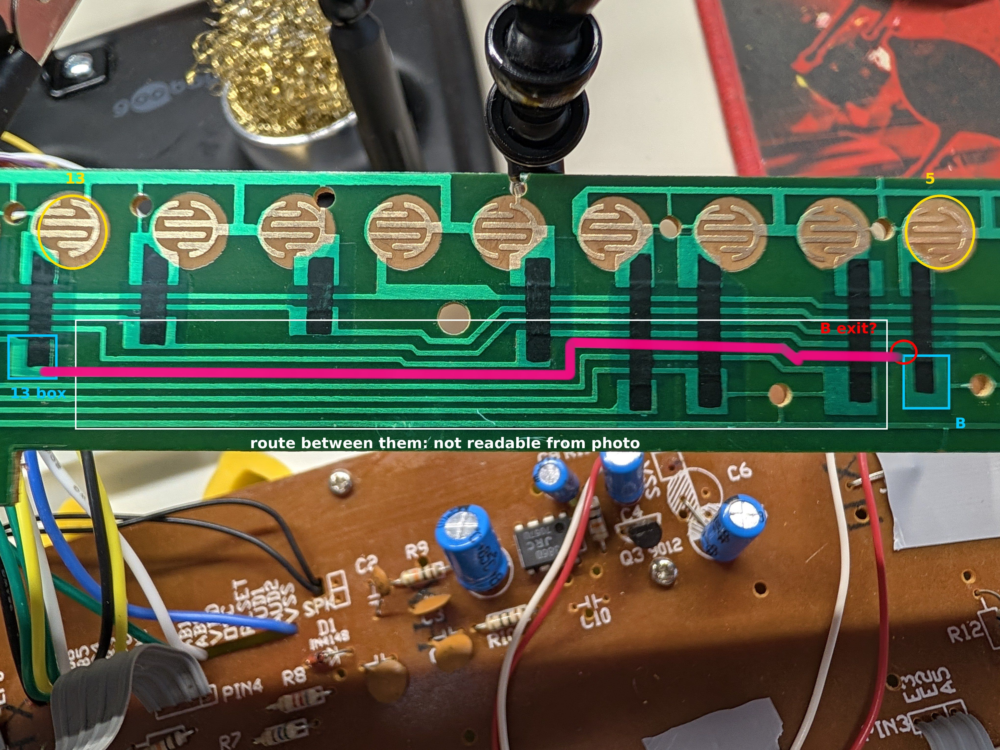
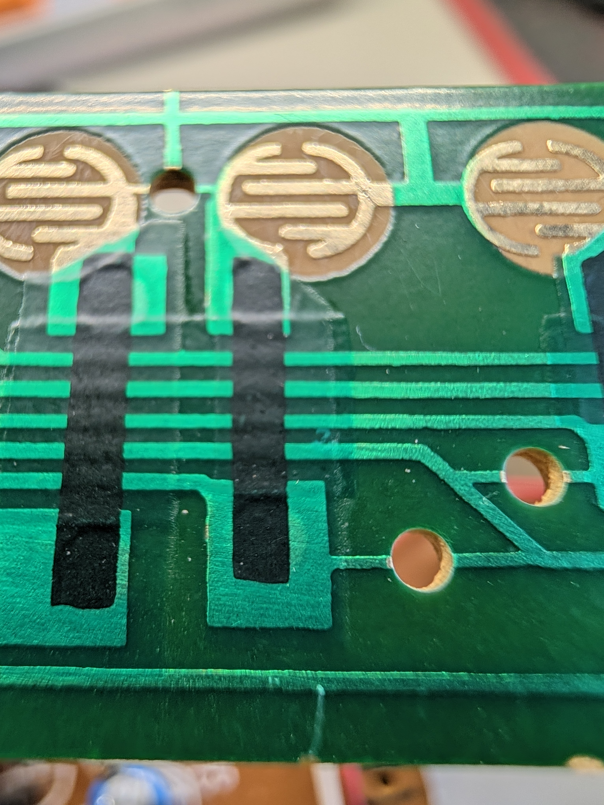
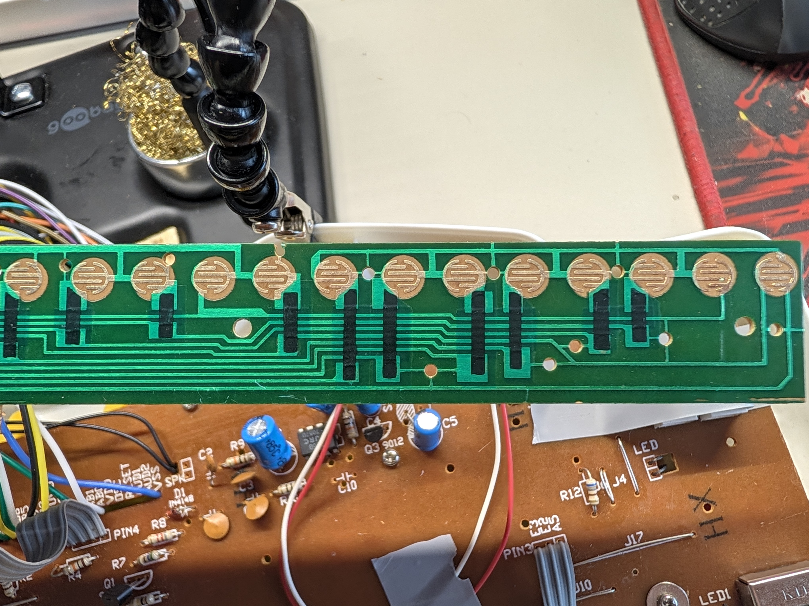
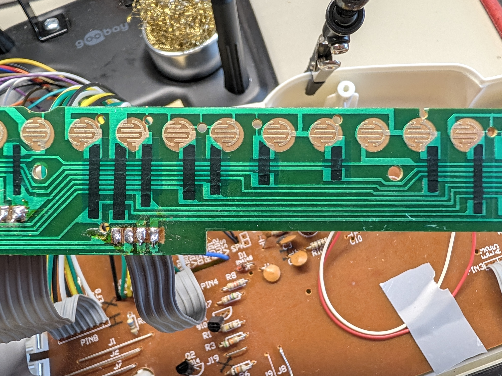
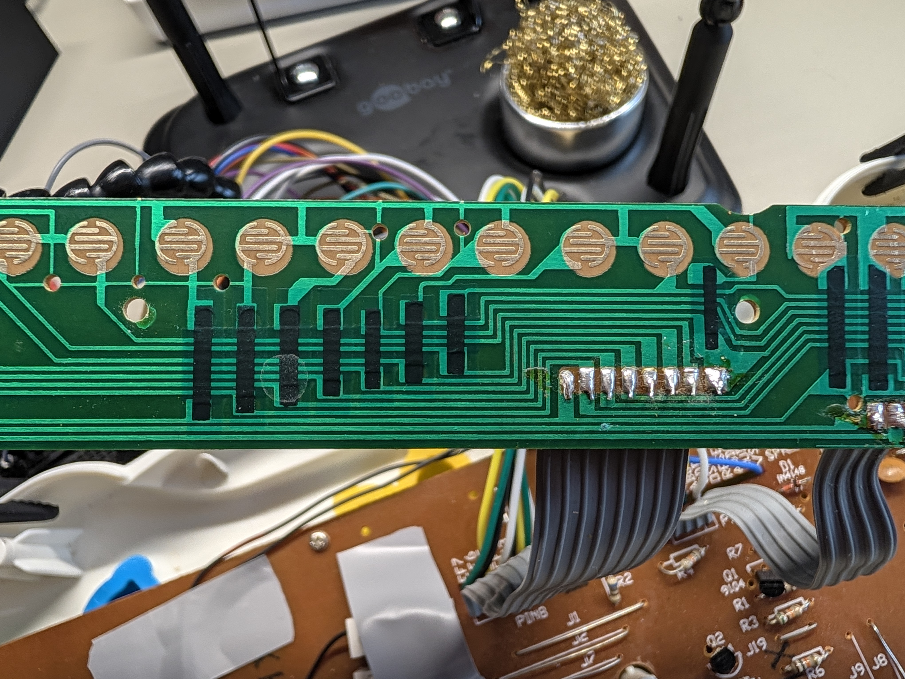
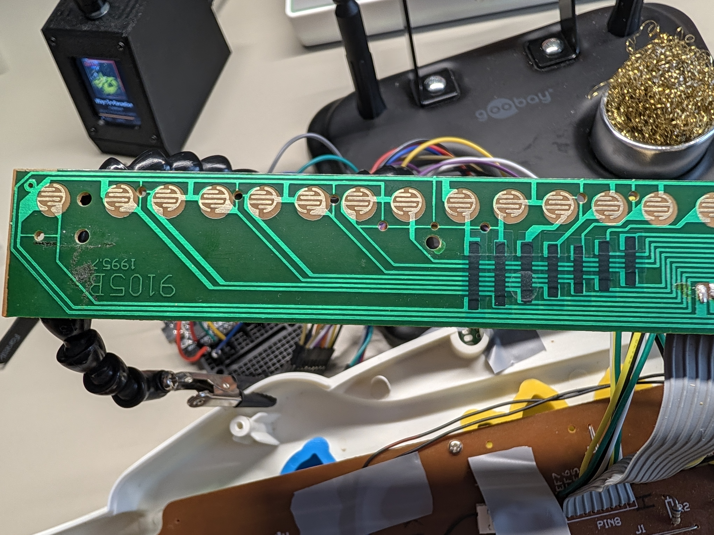

The key board (9105B 1995.7), pads up, ribbons at the bottom. What each key's two lines do on the board, and where a diode could go. Filled in as we find things.
Key 1 at the end away from 9105B (measured 2026-10-22), drawn on the right as in the photos. Pad colour = what we know about that key's diode spot. Click a pad.
What one key looks like electrically. The bottom comb's line is the one that gets the diode.

23b key 5's EF4 line from B to key 13's box (pink), drawn by the user
22 key 5 and its bar, close-up
18 the key 1 end
19 middle, the 4-wire ribbon's solder points
20 middle, the 8-wire ribbon's solder points
21 the 9105B end